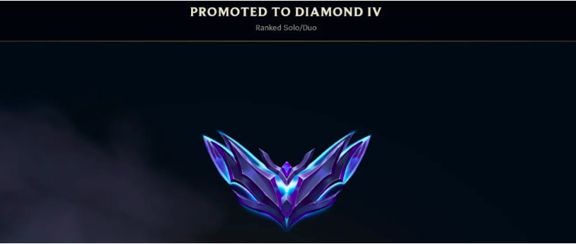

Super Eternal Sunshine
Because life is not just research
Not everything I make is a quantum circuit or a CUDA kernel. I also run a YouTube channel — Super Eternal Sunshine — where I post memes, random moments from my life, things that made me laugh, and whatever else seems worth sharing at the time. No thesis, no agenda. Just good vibes.
About the Channel
Graduate school is intense. When you spend your days thinking about Hamiltonians and GPU memory hierarchies, you need an outlet that has absolutely nothing to do with any of that. Super Eternal Sunshine is mine.
The name is a nod to Eternal Sunshine of the Spotless Mind — a film about memory, identity, and the things that make us who we are even when we wish we could forget them. The "Super" is because everything is a bit more absurd when you're running on four hours of sleep and your CUDA job just OOM'd for the third time.
Content on the channel includes: memes that only make sense if you've been to IISc (or any grad school), random moments from life in Bangalore, things I find genuinely funny, and the occasional unhinged commentary on whatever is happening in the world. It is not curated. It is not strategic. It is exactly what it says on the tin.
League of Legends — Diamond IV 😭
Right before joining IISc, I hit Diamond IV in League of Legends ranked Solo/Duo. Peak human achievement. I then immediately enrolled in a graduate programme that leaves approximately zero time for ranked games. The timing was immaculate. 😭😭

The moment is also immortalised on YouTube Shorts, in case you need to witness the raw emotion in real time: Watch the clip →
Other Things I Like
A few other things that exist outside of my GitHub profile:
- Long walks around the IISc campus. The campus is genuinely beautiful — forests, peacocks, a lake. There are worse places to think about unsolved problems.
- Reading research papers. Not casual science writing — actual papers. My current reading list sits at the intersection of things I work on: non-unitary time-dependent differential equation solving (LCHS, Lindblad dynamics, open quantum systems), robotic arm motion planning and manipulation algorithms (trajectory optimisation, compliance control), and eigenvalue problems (Krylov methods, randomised SVD, spectral graph theory). There is something satisfying about reading a paper and understanding every line of it.
- Cinema. The title of my channel is not accidental. Films — good ones — are a form of thinking that works differently from mathematics. Both are valuable.
- Swimming — national level. I swam competitively at the national level. Graduate school consumed that chapter for a while, but as of May 2026 I am planning to get back in the water after my summer internship wraps up. Some things are worth returning to.
Find Me
For research and professional enquiries: aadithyaiyer@iisc.ac.in
For everything else: youtube.com/@SuperEternalSunshine
Code: github.com/ExusBurn